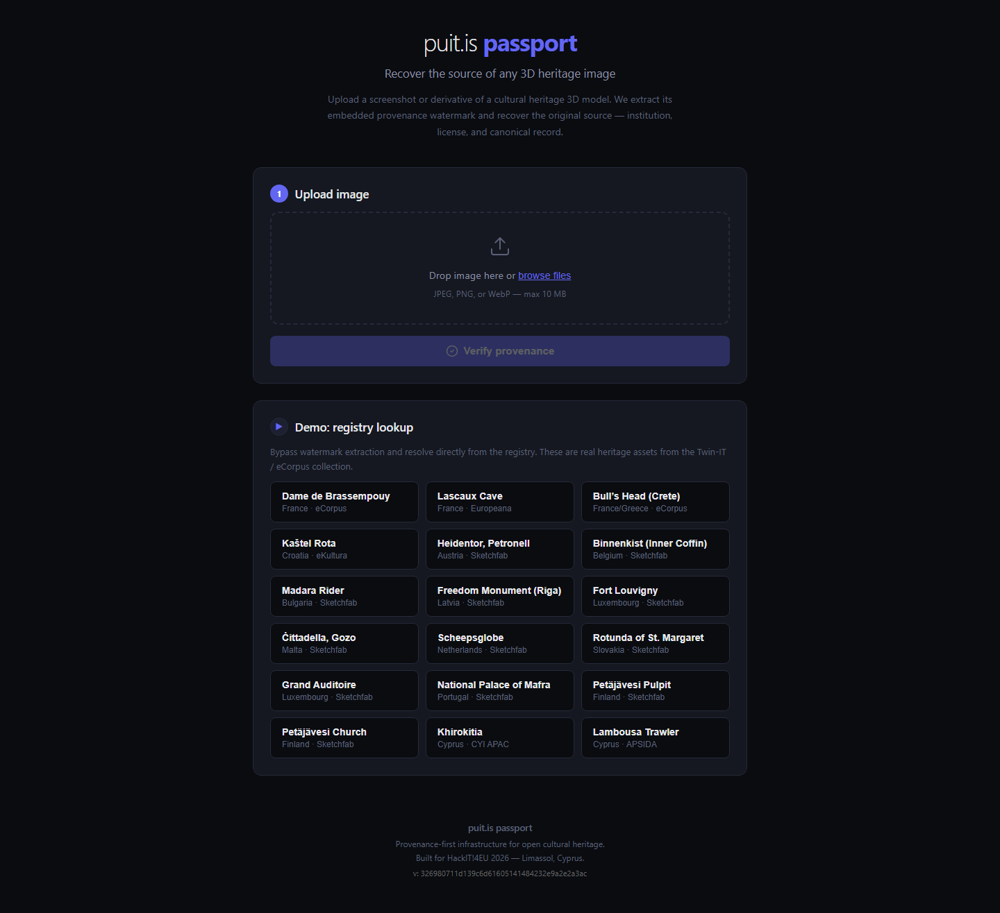
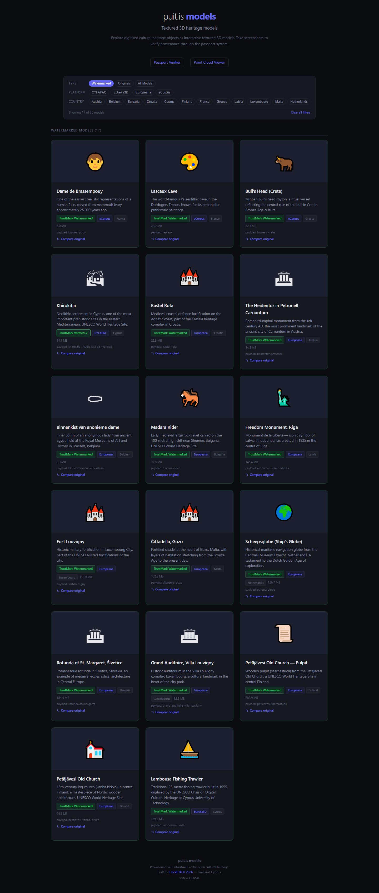
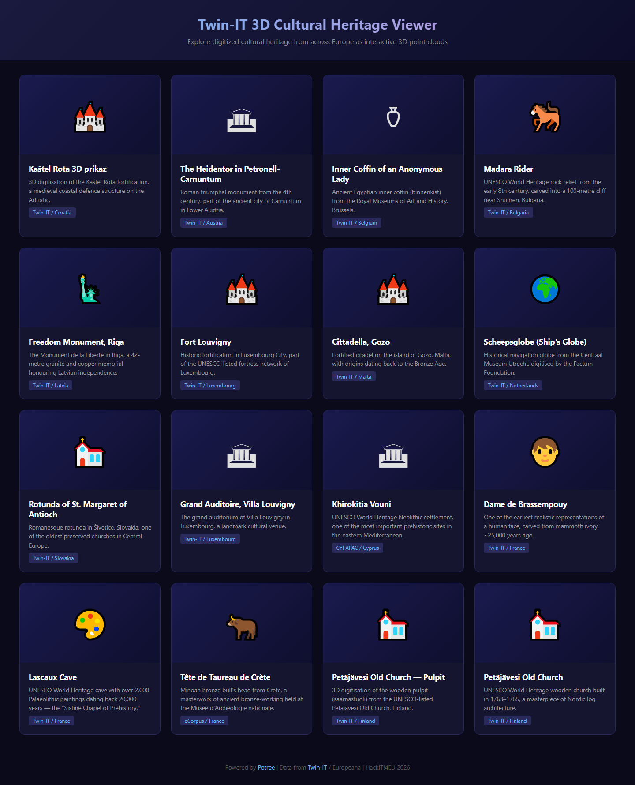

Passport — Provenance Verification
Upload a screenshot or derivative of a cultural-heritage 3D model; the passport extracts its embedded provenance watermark and recovers the original source — institution, license, and canonical record. The demo also resolves directly from the registry across real Twin-it! / eCorpus assets.

Models — Textured 3D Heritage Viewer
Digitised cultural-heritage objects as interactive, TrustMark-watermarked textured 3D models (17 of 35 shown), each with size, payload, and a "compare original" link into the passport system.

Point Clouds — Twin-IT 3D Cultural Heritage Viewer
Europe-wide digitised heritage explorable as interactive Potree point clouds — from Kaštel Rota (Croatia) and the Heidentor (Austria) to Khirokitia Vouni (Cyprus) and the Freedom Monument (Latvia).
